在 IIS 部署
开启CGI和ISAPI扩展
-
MVCXE提供了Webborker.ISAP服务程序，要加载该程序需要开启IIS的CGI和ISAPI扩展
 否则你需要在控制面板->启动或关闭Windows功能，安装CGI和ISAPI扩展
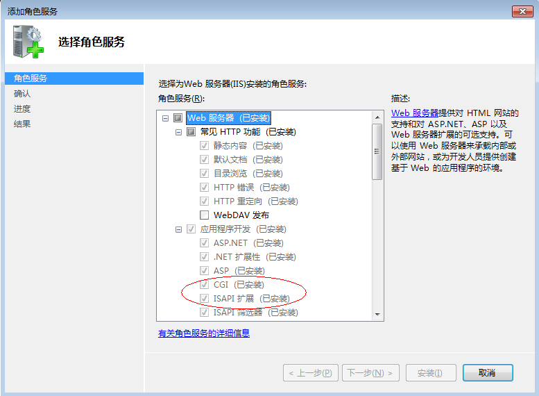
否则你需要在控制面板->启动或关闭Windows功能，安装CGI和ISAPI扩展
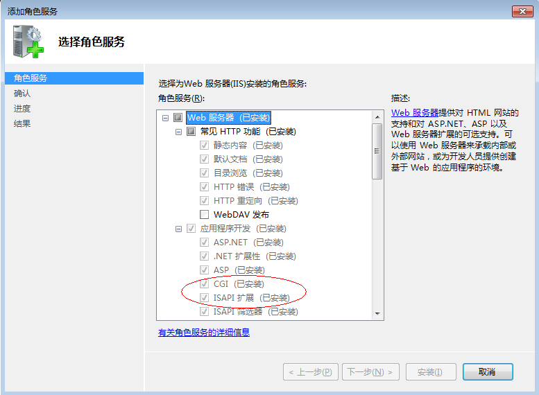 -
打开ISAPI限制 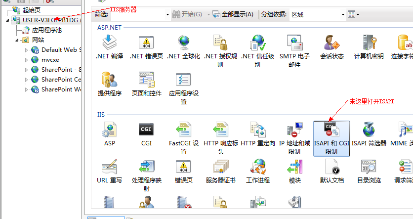 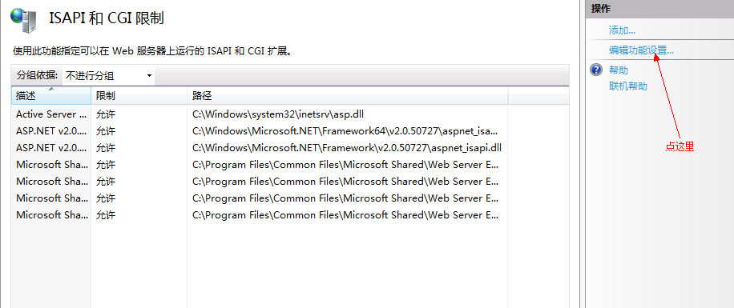 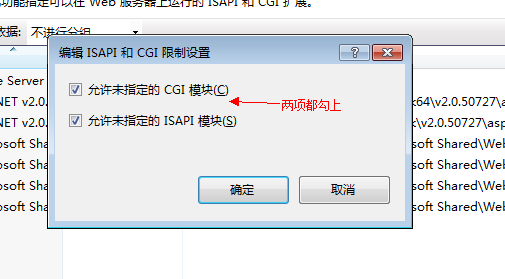
开启URL Rewrite模块
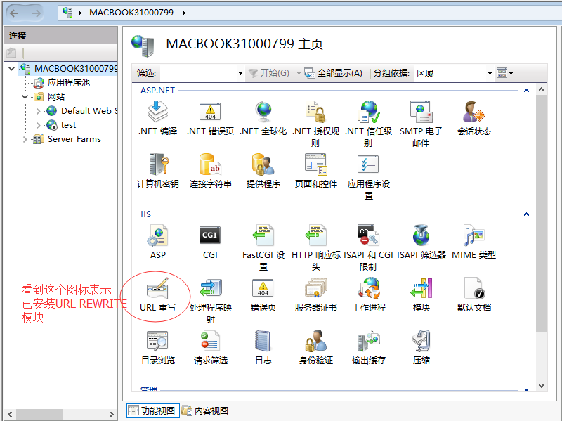
否则你需要到iis.net网站下载URL Rewrite Module 2.1
也可以安装Application Request Routing（如果要实现站外重写需要安装这个模块）
添加新网站
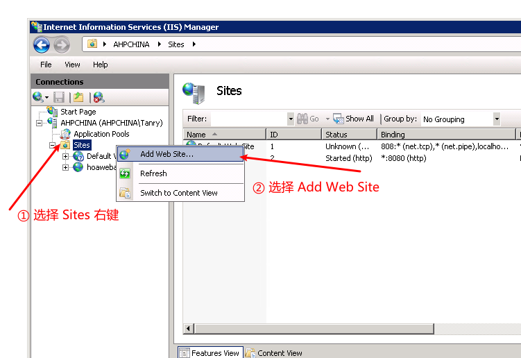
- 配置网站信息 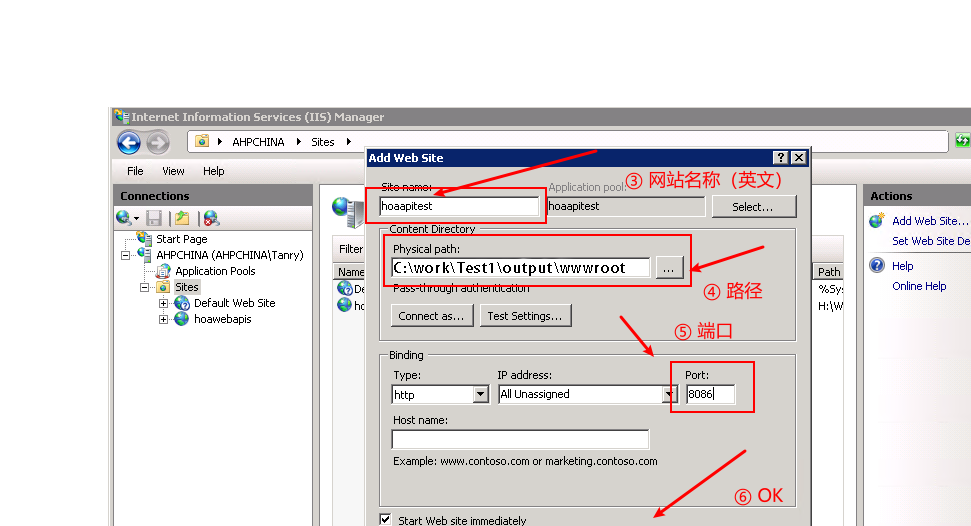
- 配置应用程序池 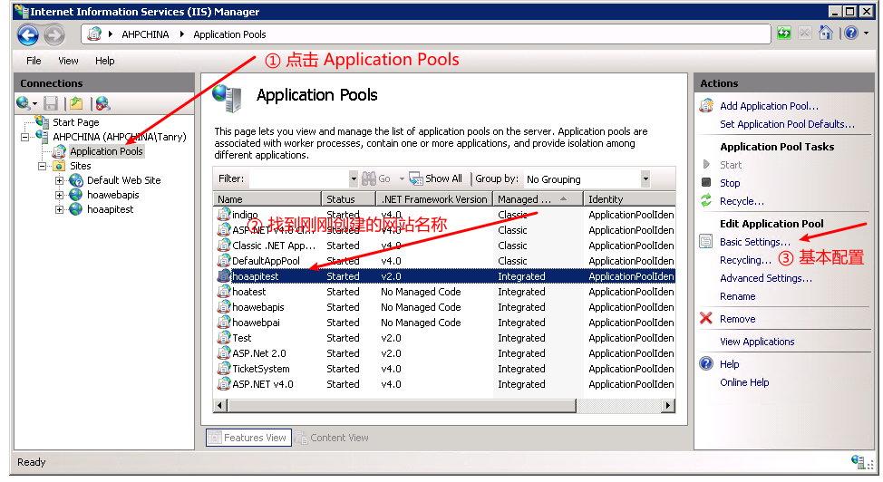
- 设置为 非托管 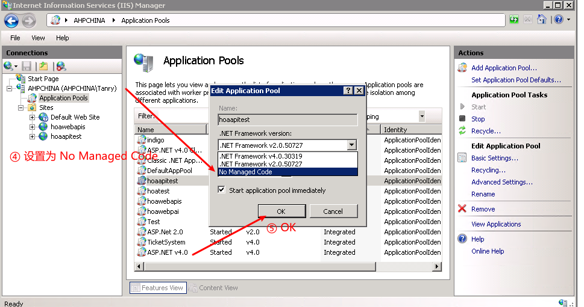
- 配置应用高级选项 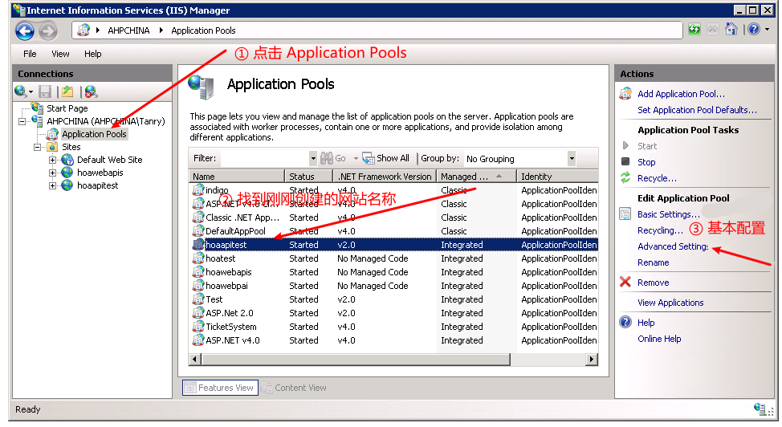
- 32位MVCXE应用程序池要启用32位应用程序 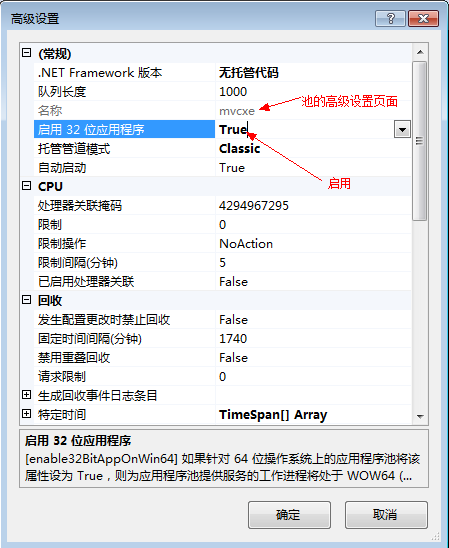
设置文件系统权限
- wwwroot目录需要设置用户IUSR/IIS_IUSRS读取权限
- wwwroot\App_Data\Log和wwwroot\App_Data目录需要设置用户IUSR/IIS_IUSRS读取执行权限
- 你的程序需要上传文件的目录（如wwwroot\uploads）需要设置用户IUSR/IIS_IUSRS读写（不能执行）权限 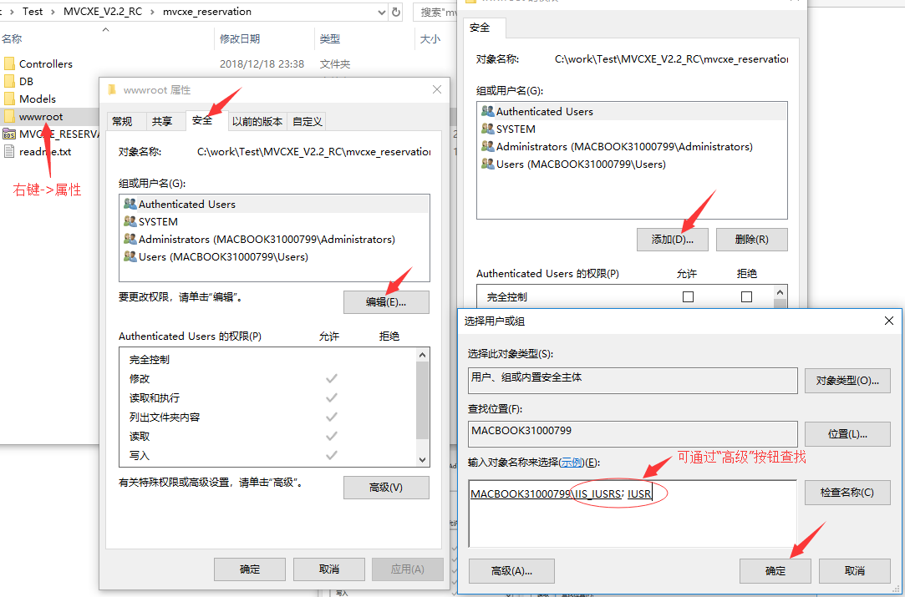
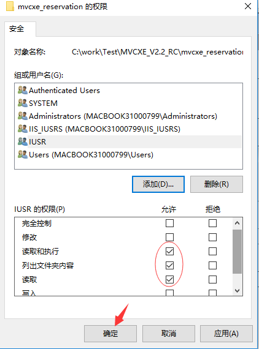
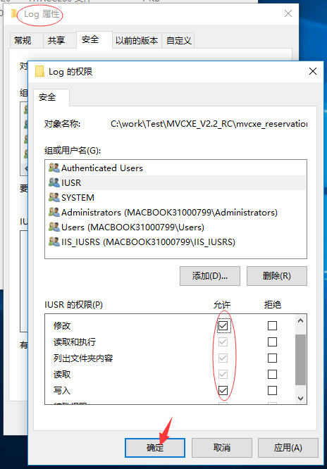
设置MVCXE程序目录结构
正常情况下MVCXE的网站目录如下：
├── output
│ ├── bds bpl files
│ ├── mvcxe bpl files
│ ├── mvcxe server exe/dll files
│ ├── other dll files
│ ├── areas
│ │ ├── area1
│ │ ├── area2
│ │ └── area3
│ ├── views
│ │ ├── view1
│ │ ├── view1
│ │ └── Shared
│ ├── wwwroot
│ │ ├── App_data
│ │ ├── files
│ │ ├── folders
│ │ ├── isapi_webborker.dll
│ │ └── web.config
│ ├── appsettings.json
│ ├── launchSettings.json
│ ├── sqlMap.xml
但因为IIS特性，我们需要设置wwwwroot目录为网站根目，iis是不允许执行根目录外的程序，所以需要将mvcxe程序放于较安全的App_data目录中，你需要将output目录下除了wwwroot外的所以文件/目录拷贝到wwwroot\App_data下，如下：
├── wwwroot
│ ├── html files
│ ├── folders
│ ├── isapi_webborker.dll
│ ├── App_data
│ │ ├── areas
│ │ │ ├── area1
│ │ │ ├── area2
│ │ │ └── area3
│ │ ├── views
│ │ │ ├── view1
│ │ │ ├── view1
│ │ │ └── Shared
│ │ ├── bds bpl files
│ │ ├── mvcxe bpl files
│ │ ├── other dll files
│ │ ├── appsettings.json
│ │ ├── launchSettings.json
│ │ └── sqlMap.xml
│ ├── web.config
一些额外需要注意的地方
-
因为安全特性，launchSettings.json中
EnabledPackageScan需要设置为false,同时你要加载的bpl都需要写在ExternalPackages中{ "packages": { "EnabledPackageScan": false, "IgnorePackageFiles": ["MVCXE.Core","inet","rtl","vcl","xmlrtl","IndyCore","IndyProtocols","IndySystem","CustomIPTransport","IndyIPCommon","IndyIPServer","dbrtl"], "ExternalPackages": [{ "Name": "FireDACCommon" },{ "Name": "FireDACCommonDriver" },{ "Name": "FireDAC" },{ "Name": "FireDACSqliteDriver" },{ "Name": "FireDACCommonOdbc" },{ "Name": "FireDACMSSQLDriver" },{ "Name": "FireDACMySQLDriver" },{ "Name": "FireDACOracleDriver" },{ "Name": "FireDACPgDriver" },{ "Name": "MVCXE.Core" },{ "Name": "MVCXE.Web" },{ "Name": "MVCXE.LoggerPro" },{ "Name": "MVCXE.Cache" },{ "Name": "MVCXE.ORM" },{ "Name": "MVCXE.TPL" },{ "Name": "MVCXE.Quartz" },{ "Name": "MVCXE.Captcha" },{ "Name": "MVCXE.Swagger" },{ "Name": "_NameSpace_BLL" },{ "Name": "_NameSpace_Web", "Area": "", "RoutePrefix": "", "IOC": [ { "interface": "IPostService", "implement": "_NameSpace_Service.Post.TPostService" }, { "interface": "ICategorieService", "implement": "_NameSpace_Service.Categorie.TCategorieService" } ] }] } } -
需要在IIS部署运行的程序，代码里向控制台写Debug信息的代码Write/WriteLn会出错，需要你用try/catch处理
IIS常见问题
状态码，不支持 PUT，DELETE 请求
默认情况下，IIS拒绝 PUT和 DELETE 请求，原因为 IIS 默认注册了一个名为 WebDAVModule 的自定义 HttpModule 导致的。
解决该问题，只需要在 web.config 移除即可：
<configuration>
<system.webServer>
<modules runAllManagedModulesForAllRequests="true">
<remove name="webDAVModule"/>
</modules>
</system.webServer>
</configuration>
IIS 回收问题和配置
通过 IIS 部署MVCXE应用程序，如果启动了系统日志，就会发现经常出现Application is shutting down...的日志，代表 IIS 回收了应用程序池。
对于一个长期在线的网站来说，这是非常不合理的，所以我们可以通过以下配置让 IIS 进行长时间不访问便回收的机制。
配置步骤如下：
- 打开 IIS 并点击左侧树根节点（计算机名称）并点击右侧的 Configuration Editor（配置编辑器） 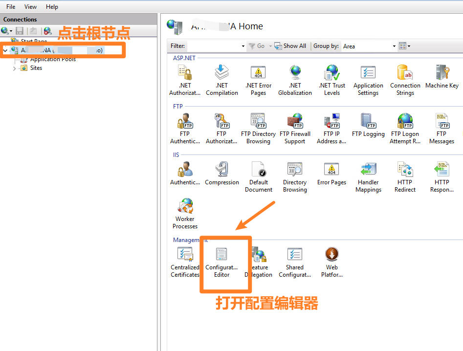
- 在 Section（节）选择 system.applicationHost/applicationPools 并设置 startMode 为 AlwaysRunning，之后点击 Apply 保存。 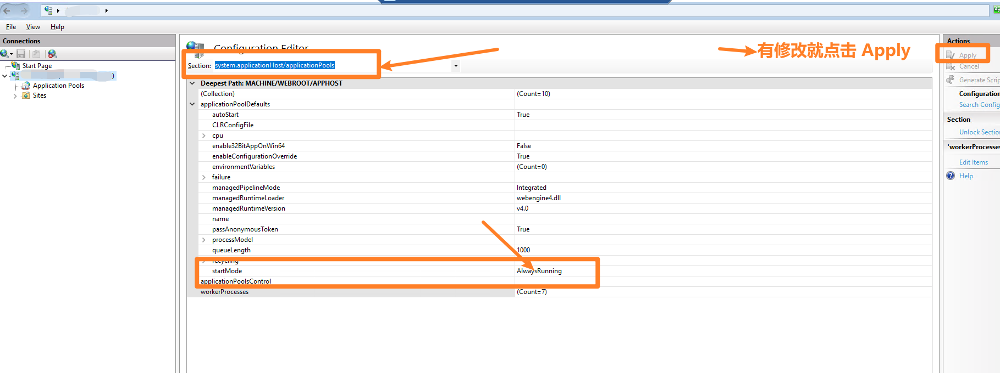
- 点击左侧树根节点（计算机名称）下的 Application Pools 并点击最右侧的 Set Appliation Pool Defaults...（设置应用程序池默认配置...） 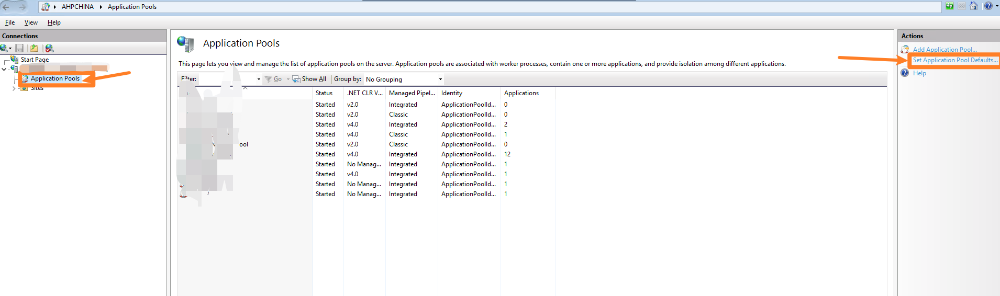
- 设置 Idle Time-out (minutes)（闲置超时（分钟）为 0